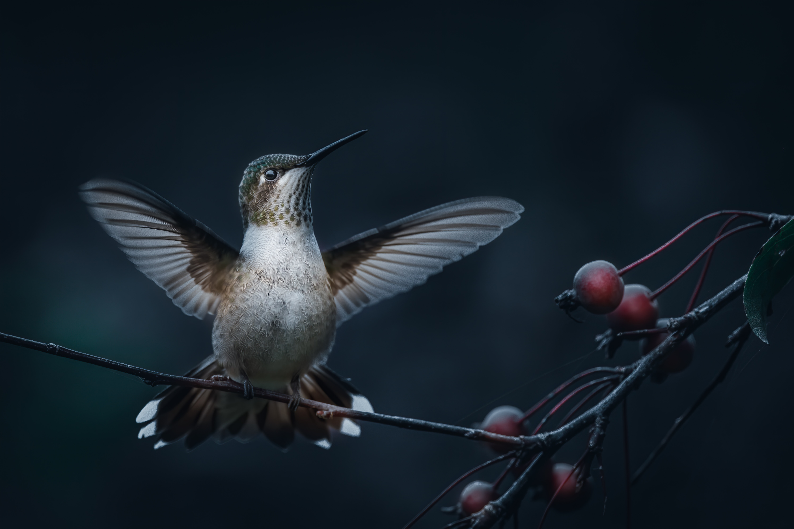

모음
자음
발음규칙
문법
연습
대화
HTML이란 무엇인가
즐거운 날들
이
지나가고
있어요.꽃밭에 앉아서 꽃잎을 보네 고운 빛은 어디에서 왔을까 아름다운 꽃이여 꽃이여
이렇게 좋은날엔 이렇게 좋은날엔 그님이 오신다면 얼마나 좋을까 꽃밭에 앉아서 꽃잎을 보네
고운 빛은 어디에서 왔을까 아름다운 꽃송이
이렇게 좋은날엔 이렇게 좋은날엔 그님이 오신다면 얼마나 좋을까

꽃밭에 앉아서 꽃잎을 보네 고운 빛은 어디에서 왔을까 아름다운 꽃송이